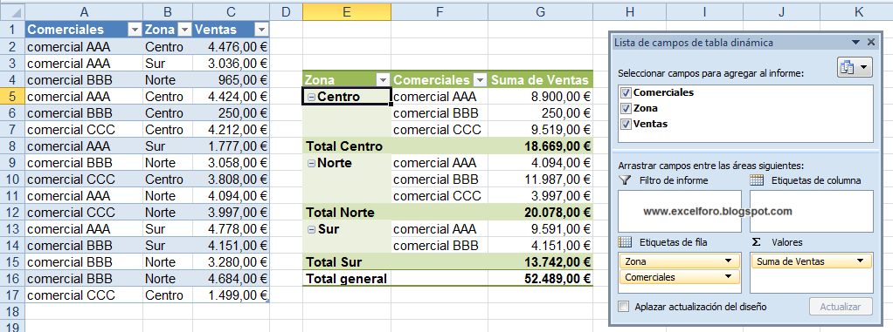
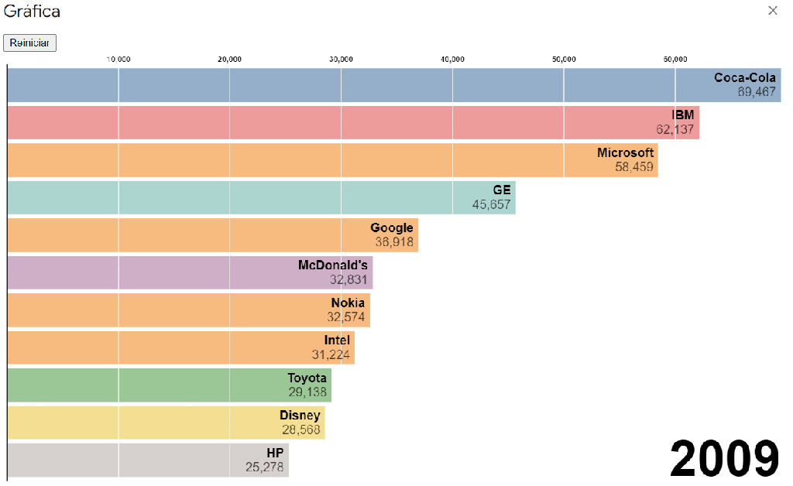

1. Estructura de un informe
Un informe profesional debe ser claro, consistente y estar organizado en secciones que faciliten la lectura, la validación y la toma de decisiones. La estructura clásica se compone de encabezado, cuerpo y pie. A continuación se describe cada parte con recomendaciones prácticas y ejemplos.
1.1. Elementos básicos: encabezado, cuerpo y pie
- Encabezado: identifica el documento y contextualiza (título, filtros, fecha).
- Cuerpo: presenta los datos (tablas, listas, gráficos, agrupaciones).
- Pie: contiene totales, notas legales, número de página y metadatos.
1.1.1. Encabezado
El encabezado sirve para contextualizar el informe y permitir la trazabilidad. Debe incluir elementos mínimos como título, fecha de generación, filtros aplicados y, opcionalmente, logotipo y datos del autor.
- Recomendaciones: mantén un título corto y descriptivo; muestra los filtros activos (p. ej. rango de fechas)
- Usabilidad: si el informe puede exportarse, incluye un identificador único o versión para identificar revisiones.
Informe de Ventas Mensuales — Mayo 2025
Filtrado por: Región Este
Generado por: Usuario Admin | Fecha: 01/06/20251.1.2. Cuerpo del informe
El cuerpo contiene la información principal: tablas, listas, gráficos y secciones agrupadas. Debe priorizar la legibilidad y la jerarquía de la información (resaltar totales o KPIs).
- Usa tablas con encabezados claros y orden lógico de columnas (fecha, categoría, valor).
- Incluye agrupaciones y subtotales para facilitar el análisis (por cliente, región, producto).
- Combina tablas y gráficos; no repitas la misma información innecesariamente.

1.1.3. Pie del informe
El pie alberga información de cierre: totales globales, número de página, fecha/hora de exportación, notas legales o firma. Debe ser discreto, legible y uniforme en todas las páginas.
- Incluye totales y si procede, enlaces a políticas o notas aclaratorias.
- Muestra número de página en formato "Página X de Y".
- Si el informe se exportará, añade la fecha y la hora de la exportación.
Total general: 12.500 €
Página 1 de 3
Generado el: 01/06/2025 10:241.2. Uso de asistentes para generación rápida
Los asistentes de informes aceleran la creación de plantillas y diseños sin necesidad de codificar todo el formato a mano. Son muy útiles para prototipos o informes estándar; en informes complejos pueden requerir ajustes manuales posteriores.
1.2.1. Asistentes en entornos comunes
Herramientas habituales que ofrecen asistentes:
- Visual Studio (ReportViewer / RDLC): integración directa en aplicaciones .NET.
- JasperReports / Jaspersoft Studio: diseñador visual para Java (.jrxml / .jasper).
- Crystal Reports: clásico en entornos .NET y SAP.
- Herramientas BI (p. ej. Power BI): generadores visuales con conectores a múltiples orígenes.
1.2.2. Ventajas y limitaciones
Ventajas:
- Desarrollo rápido de plantillas y compatibilidad con múltiples fuentes.
- Alineación y estilos predefinidos que reducen errores visuales.
- Permiten probar datos reales sin escribir todo el código.
Limitaciones:
- Menor flexibilidad para diseños muy específicos o con lógica compleja.
- El código generado puede ser difícil de mantener si se personaliza mucho.
- Algunos asistentes no soportan características avanzadas (scripts, subinformes dinámicos).
- Selección del origen de datos.
- Definición de campos a mostrar.
- Agrupaciones y totales.
- Estilo y disposición.
- Configuración de encabezado y pie.
Consejos prácticos para diseñar la estructura
- Pensar en el usuario final: ¿qué información necesita primero?
- No sobrecargar el encabezado con datos irrelevantes; usar prefiltros para reducir ruido.
- Usar subtotales y trazabilidad (usuario/fecha) cuando el informe se comparte o archiva.
- Preparar el informe para exportación (PDF, Excel) asegurando que las tablas no queden partidas en páginas de forma inapropiada).
2. Fuentes de datos, filtros y cálculos
2.1. Selección de fuentes de datos y aplicación de filtros
Fuentes habituales
- Bases de datos relacionales: MySQL, SQL Server, PostgreSQL u Oracle.
- Datos en memoria: listas, arrays o colecciones como
List<T>. - Servicios web: APIs REST cuando la herramienta de informes lo permite.
- Archivos: CSV, XML o JSON.
La conexión puede realizarse mediante conjuntos de datos, procedimientos almacenados, consultas SQL o asistentes gráficos.
Filtros dinámicos
- Antes de generar: el usuario elige fechas, cliente, categoría o estado.
- Durante la ejecución: se pasan parámetros al informe y a su consulta.
Ejemplo: mostrar pedidos de un cliente entre dos fechas seleccionadas.
Map<String, Object> parametros = new HashMap<>(); // Prepara los filtros que recibirá el informe
parametros.put("ClienteID", 102); // Filtra por el identificador del cliente
parametros.put("FechaInicio", "2025-05-01"); // Establece la fecha inicial
parametros.put("FechaFin", "2025-05-31"); // Establece la fecha final
JasperPrint print = JasperFillManager.fillReport("InformePedidos.jasper", parametros, conn); // Genera el informe con esos filtros2.2. Subtotales, campos calculados y formatos
- Subtotales: agrupan y suman valores, por ejemplo, ventas por región o incidencias por técnico.
- Campos calculados: precio total = cantidad × precio unitario; margen = precio de venta − coste; IVA = base imponible × 0,21.
- Formato: configura decimales, separadores de miles, moneda, porcentajes y alineación.
- Condiciones: muestra “Pendiente” si la fecha de entrega está vacía o resalta valores que superan un umbral.
Ejemplo: 3 unidades a 12,50 € dan un subtotal de 37,50 €. Si el informe muestra importes monetarios, usa dos decimales y el símbolo de moneda; no presentes el dato como un número sin contexto.
Comprueba que los filtros limiten los datos esperados y que las escalas, unidades y formatos no alteren la interpretación de los resultados.
3. Representación gráfica de información
Los gráficos son un complemento visual que facilita la comprensión de los datos presentados en un informe. A través de ellos, es posible detectar tendencias, comparar resultados y comunicar información compleja de forma clara y atractiva.
3.1. Tipos de gráficos: barras, líneas y sectores
Cada tipo de gráfico se adapta a un propósito distinto. Elegir el tipo adecuado mejora la comunicación y evita interpretaciones erróneas.
3.1.1. Gráfico de barras
Ideal para comparar valores entre categorías o grupos. Puede representarse de forma horizontal o vertical. Es uno de los más utilizados en informes de ventas o rendimiento.

3.1.2. Gráfico de líneas
Se utiliza para mostrar la evolución de un valor a lo largo del tiempo, como la tendencia de ventas mensuales o el crecimiento de usuarios. Transmite continuidad y permite visualizar patrones de comportamiento.

3.1.3. Gráfico de sectores (tarta)
Muestra la proporción de cada categoría respecto al total. Es útil para representar distribuciones porcentuales, aunque se recomienda evitarlo si hay muchas categorías o valores muy similares.
pie showData
title Distribución de presupuesto por área
"Marketing" : 30
"Desarrollo" : 40
"Formación" : 15
"Soporte" : 15
3.2. Configuración visual de gráficos
Además del tipo de gráfico, su efectividad depende de una configuración visual adecuada: colores, etiquetas, escalas y leyendas deben diseñarse con criterio estético y funcional.
3.2.1. Colores, etiquetas y leyendas
- Usa colores coherentes con la identidad visual de la aplicación o empresa.
- Resalta solo los datos importantes con colores más intensos.
- Incluye etiquetas visibles con los valores clave o porcentajes.
3.2.2. Escalas y ejes
- Define escalas coherentes y proporcionales para evitar distorsionar los datos.
- Etiqueta los ejes con nombres y unidades claras (€, %, unidades, etc.).
- Usa eje secundario si comparas métricas con diferentes unidades (p. ej. ingresos y visitas).
3.2.3. Personalización adicional
- Agrega títulos descriptivos que indiquen qué representa el gráfico.
- Ordena los valores de forma lógica (por valor o por nombre alfabético).
- Usa formato de valores adecuado: moneda, número o porcentaje.
flowchart LR
A[Seleccionar tipo de gráfico] --> B[Configurar ejes]
B --> C[Aplicar colores y etiquetas]
C --> D[Agregar título y leyenda]
D --> E[Insertar en el informe]
4. Generación de código e integración de informes en aplicaciones
Una vez diseñado el informe con sus datos y gráficos, el siguiente paso es integrarlo dentro de la aplicación. Esto permite que el usuario final pueda visualizarlo, filtrarlo, imprimirlo o exportarlo a distintos formatos directamente desde la interfaz del software.
4.1. Herramientas que ayudan a automatizar este proceso
Existen herramientas y librerías que permiten generar y mostrar informes desde el código, integrándolos en aplicaciones de escritorio o web. Estas herramientas se encargan de conectar los datos, renderizar el diseño y mostrar el resultado.
4.1.1. JasperReports en Java
JasperReports es una de las librerías más utilizadas en el entorno Java para crear
informes.
Se basa en plantillas diseñadas con Jaspersoft Studio, que se guardan como archivos
.jrxml y se compilan a .jasper.
flowchart LR
A[Jaspersoft Studio .jrxml] --> B[Compilar a .jasper]
B --> C[Aplicación Java]
C --> D[Cargar datos y parámetros]
D --> E[Renderizar informe con JasperReports]
E --> F[Mostrar o exportar PDF/Excel/HTML]
Ejemplo básico en Java:
Connection conn = DriverManager.getConnection(url, user, pass); // Abre la conexión a la base de datos
Map<String, Object> params = new HashMap<>(); // Crea el mapa de parámetros del informe
params.put("ClienteID", 102); // Filtra por el cliente indicado
params.put("FechaInicio", "2025-05-01"); // Define el inicio del periodo
params.put("FechaFin", "2025-05-31"); // Define el final del periodo
JasperPrint print = JasperFillManager.fillReport("InformeVentas.jasper", params, conn); // Combina plantilla, parámetros y datos
JasperViewer.viewReport(print, false); // Muestra el informe en una ventanaEl informe se muestra en una ventana lista para imprimir o exportar.
4.1.2. Otras herramientas (solo como referencia)
Además de JasperReports, existen alternativas según el entorno de desarrollo:
- Crystal Reports: ampliamente usado en .NET y SAP; ofrece diseñador visual y visor integrado.
- ReportViewer (RDLC): nativo en Visual Studio, ideal para proyectos C# o VB.NET.
- iReport / Pentaho: soluciones complementarias en entornos empresariales.
ReportViewer viewer = new ReportViewer(); // Crea el visor de informes
viewer.LocalReport.ReportPath = "InformeVentas.rdlc"; // Selecciona la plantilla
viewer.LocalReport.DataSources.Add( // Añade la fuente de datos
new ReportDataSource("VentasDataSet", listaVentas) // Asocia la lista al conjunto esperado
); // Finaliza la configuración de la fuente
viewer.RefreshReport(); // Actualiza y muestra el informe4.2. Cómo usar los informes en nuestra aplicación
Una vez que la plantilla del informe está creada, se puede incluir en la aplicación de varias formas: mostrando el informe en una ventana, pasando parámetros de filtrado o exportando el resultado a diferentes formatos.
4.2.1. Pasar datos al informe
Los parámetros permiten personalizar los datos que aparecen en el informe. Por ejemplo, mostrar los pedidos de un cliente específico o los resultados de un mes concreto.
Map<String, Object> parametros = new HashMap<>(); // Prepara los parámetros del informe
parametros.put("Mes", "Mayo"); // Selecciona el mes del informe
parametros.put("Anio", 2025); // Selecciona el año del informe
JasperPrint print = JasperFillManager.fillReport("InformeMensual.jasper", parametros, conn); // Genera el informe con el periodo indicado4.2.2. Mostrar el informe en una ventana
Los informes pueden visualizarse directamente dentro de la aplicación.
En Java, se usa JasperViewer; en .NET, el control ReportViewer
embebido en formularios o páginas web.
JasperViewer.viewReport(print, false); // Abre el informe para consultarlo e imprimirloEsta línea abre una ventana interactiva con opciones de impresión y zoom.
4.2.3. Guardar el informe como PDF u otros formatos
También es posible exportar los informes a distintos formatos: PDF, Excel, Word, HTML o incluso imagen. Esto permite compartir los resultados fácilmente.
JasperExportManager.exportReportToPdfFile(print, "InformeVentas.pdf"); // Guarda el informe en formato PDFEl archivo generado puede adjuntarse a correos o almacenarse en el servidor.
flowchart TD
A[Aplicación] --> B[Cargar informe .jasper]
B --> C[Pasar parámetros y datos]
C --> D[Renderizar informe]
D --> E[Mostrar en ventana]
D --> F[Exportar PDF / Excel / Word]
Recomendaciones finales
- Separa la lógica de datos del diseño del informe (modelo MVC o MVP).
- Guarda las plantillas
.jaspero.rdlcen una carpeta accesible y controlada por versión. - Proporciona al usuario opciones claras de exportación y filtrado.
- Verifica la compatibilidad de fuentes y formatos antes de la exportación.